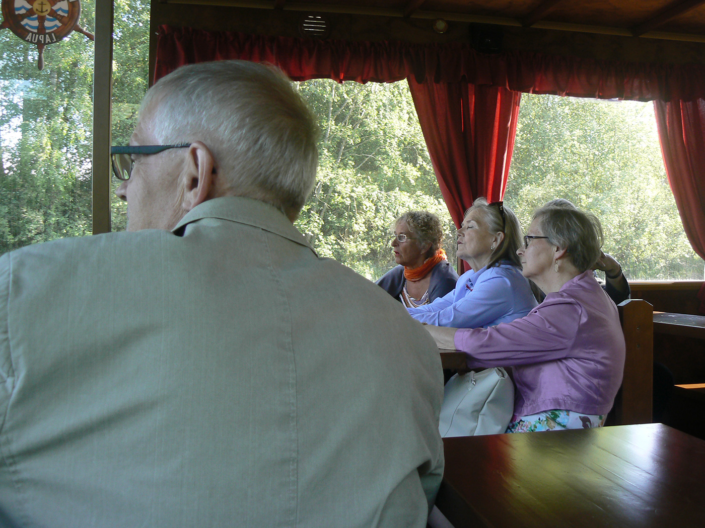
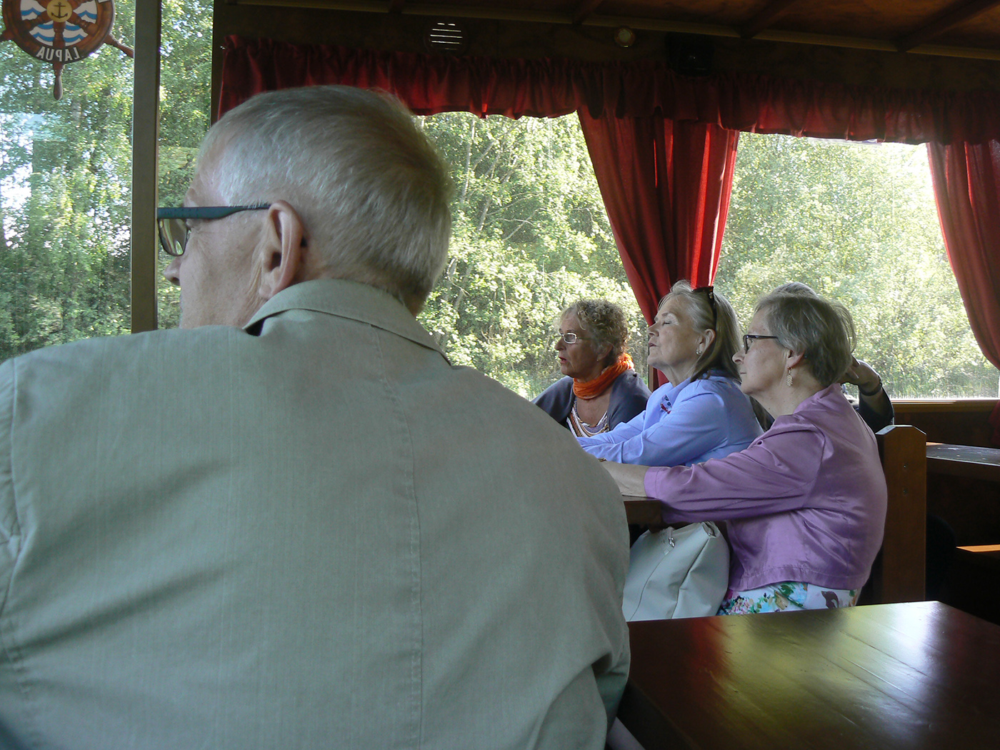

VUODEN 1966 YLIOPPILAIDEN TAPAAMINEN
Hei riemuylioppilaat
Tapaminen Lapualla 3 – 4 tätä kuuta onnistui ilmeisesti hyvin.
Paikalla meitä oli pe 20, la 21, nimittäin Johanna A, Liisa A, Anneli H, Tellervo I, Rauha K, Kaarina K, Terttu L, Leila L, Marja-Liisa M, Leena P, Kaisu T, Martti H, Helena I, Esko I, Anja M, Leena O, Hilkka S, Reijo S, Sirkka S, Tuulikki T, ja Marja T.
Tässä valokuvia tapaamisesta. Niitä voi tulla lisääkin jos osanottajat niitä hyväntahtoisesti lähettävät.
 


Hyvää kesää kaikille !
Perjantai 3.6.2016
Kokoonnumme kello 17.30 Vanhan Paukun kulttuurikeskukseen, Ison Prässin kahvioon. Siirrymme 17.50 rannassa odottavaan jokilaivaan, jolla risteilemme Lapuanjokea pitkin riippusillalle saakka josta palatessamme nousemme Nurmonjokea pitkin Emäntäkoulun padolle saakka. Risteily kestää yhden tunnin.
Risteilyn hinta on 10 euroa/matkustaja.
Siirrymme Ison Prässin kahvioon jossa nautimme tulomaljan ja ruokailemme. Ruoka on tarjolla seisovasta pöydästä. Kahviota pitää unkarilaispariskunta joten sopii olettaa että ruoka on unkarilaistyyppistä.
Tarjolla on seuraavaa:
- alkukeitto
- kasvis-/liharuoka
- leipä, voi
- alkoholiton ruokajuoma
- kahvi
Hinta on 18 euroa/ruokailija.
Ravintolassa on A-oikeudet
Ruokailun jälkeen siirrymme illan ohjelmaan joka aloitetaan paikalla olevien esittäytymisellä, pituudeltaan enintään 1 minuutti/osallistuja.
- Jotain muuta ohjelmaa......
- Mukavaa yhdessä oloa......
Lauantai 4.6.2016
Kokoonnumme Lapuan Urheilutalolle, Urheilukatu 4, kello 9.30.
Urheilutalolla meille on varattu istuinpaikat. Tilaisuudessa uudet ylioppilaat kiinnittävät jokaisen riemuylioppilaan rintaan ruusun. Seuraamme juhlaa. Riemuylioppilaiden stipendi luovutetaan jollekin taito- ja taideaineiden opiskelijalle ja on suuruudeltaan 200 euroa. Stipendin saajasta päättää koulun opettajakunta. Stipendi on etukäteen maksettu ja siihen kerätään kolehti osallistujilta perjantai-iltana.
Juhla päättyy noin kello 12.00. Juhlan jälkeen siirrymme urheilutalon välittömässä läheisyydessä olevaan Yläkouluun, entiseen Lapuan Yhteislyseoon. Tutustumme nykyiseen kouluun rehtori Petri Saunamäen opastamana. Tutustumisen jälkeen siirrymme koulun pääportaille valokuvattavaksi ja sen jälkeen mahdollisesti kokoontuminen päätöskahville.
MUUTOKSET OHJELMAAN PÄIVITETÄÄN TÄLLE NETTISIVULLE. KÄYHÄN KATSOMASSA.